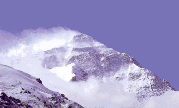
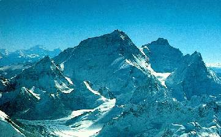
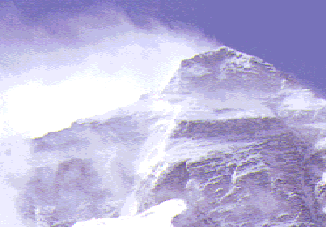
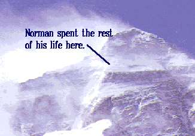
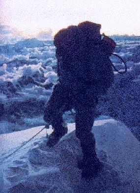
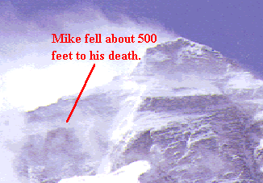

The 1994 American Everest Expedition
or... How I Spent My Summer Vacation
Hi; my name is Dan. Glad to meet you. Thank you for visiting my Long-Way-From-Home-Page.
As I write this, I am sitting alongside the River Thames, with a laptop, in the countryside west of London, watching the people, and the swans, revel in the unexpected springtime sunshine. You are probably indoors... somewhere with walls, electricity... somewhere relatively warm, calm, and civilised...
In this context, it is hard to know how to begin the story of the ascent of Everest. It seems so far away... maybe, uh, because it is. But a picture is worth 14,000 words...

This is the North Side of Everest, as seen from Base Camp in Tibet. There's a good deal more snow on the face here than what we saw during most of the climb... although the plume off the summit was ever-present.
As we approached the mountain, the plume was an essential tool for us: We could time the cloud movements relative to landmarks, and compute the wind speed. With Everest ascending into the jet stream, the wind stayed at 100MPH for the entire month of April. Not much chance for the
snow to pile up. Not much chance of us getting Camp 5 placed, either. (Rats.) This did not keep us from trying, and thereby enjoying the finer points of the environment of which we were so much a part.
How cold did it get? Not sure. I know that somebody
measured -35F at one point at Camp III. It would have been colder up high. With the winds on the North Ridge, and the the inefficiency of the circulatory system at these altitudes, exposed flesh would freeze pretty well right away.
If you're a numbers person (say, a Far-East derivatives trader, or any American late on April 14), the final score for Everest Pre-Monsoon 1994 was: 8 expeditions on the north side; 6 guys reached the top; 4 guys died. Our expedition put 5 on top, 3 of whom were on my summit team.
One of them, Mike Rheinberger, a scholar, an adventurer,
and a gentleman, died upon descent.
Mike would have been pleased to see Everest on the Web. I wish he could.
I've got a bunch of photos... right here... er, ah, they're nice, but you'll have to trust me on that. They're not scanned in yet. I'm doing that, and plan to spice up these pages when I do.
Until they are, though, there's still plenty to talk about. But you might check back here in a month & have another peak (sic).
Easy-To-Follow Directions: Ascent of Everest

This is the North Face of Everest, as seen from Cho Oyu, a 26,000 foot peak in the northern suburbs of Everest. It's the best photo I've seen for describing routes on the North Side.
The right skyline, sloping into the picture, away from you, is the South Ridge; the saddle at its lower end is the South Col; below that, the Khumbu Icefall. This is the route of the first ascent of Everest, by Sir Edmund Hillary and Tenzing Norgay, in 1953. Some 80% of all Everest ascents are from the South.
The ridge coming straight toward you is the West Ridge. This is the route of the first American ascent of Everest in 1963. Last but not least, the long left skyline is the Northeast Ridge.
Our plan was to follow the
East Rongbuk Glacier around behind Changtse (the prominent pointed peak left of Everest), climb up to the North Col (the sunlit saddle between Changtse and the main Everest massif), climb the north ridge, cross the face, gain
the Northeast Ridge partway along, and follow it up to the summit.
What could be simpler?
Stroke at 21,500 Feet
Starting from Base Camp, there was 15 miles of rugged glacier, culminating in a 1,500 foot headwall below the North Col. Just short of the headwall was Camp III, at 21,500 feet. This was our Advanced Base Camp (ABC), the springboard for operations on the upper mountain.
We had an incredible camp there, maybe 20 tents arrayed around a central "bombproof" mess tent which, with its extensive internal tubular skeleton and our array of external anchors, would weather the most difficult storm (we hoped). One good aspect of the Northern approach to Everest is that yaks can be used up to this point... it took about 100 yak loads to provision ABC.
ABC had become the focal point in the expedition.
We were jockeying for position, looking for holes in the weather to press higher on the mountain. Climbers and support teams from several countries... the USA, Canada, Taiwan, Germany, New Zealand, Italy... were cycling up the hill through ABC, returning to base camp to recover, positioning people to take advantage of any gap the weather might offer. Several teams were looking at their first summit attempts. A lot of careful orchestration was going on.

Our Expedition was supported by a dozen Sherpas. The Sherpa people, originating in the Khumbu region of Nepal, are wonderful. Self-motivating. Willing to contribute unquestioningly under the most difficult circumstances, and willing to contribute anonymously to the team effort. Tough yet happy. So unlike us...
It was quite common for the Sherpas to collect in one side of the mess tent at ABC, chattering to each other in their native tongue, while the Americans did much the same on the other side of the tent. There was relatively little contact across that boundary; the language gap and culture gap was too wide. This evening was no different. Pasang, over in the Sherpa corner, was making a dramatic point. He raised his arm in a gesture, and froze.
At sea level, blood is about 40% solid material. At altitude, it approaches 70%. Things happen. Blood clots... strokes.
Pasang had a stroke... a blockage in the brain... suffering through several gran mal seizures... thrashing wildly. Luckily, there was a doctor there... I think she was Austrian, part of a German team which was also established at ABC. It was an all-night battle to keep him alive.
Various things were done... IV to thin down the blood a bit. Various drugs... oxygen masks. Not a whole lot of sleep was had that evening. His condition was not stable. He had to come down.
At the 7AM radio call, Base Camp got the news that a team, comprised of Americans, Sherpas, Canadians, Germans, others... were already well undeway bringing Pasang down the glacier. A makeshift stretcher... 15 miles of rugged terrain. 6-8 people per shift. 5 minutes at a shift. Juggling to maintain IV and oxygen.
His condition remained critical for the duration. At one point, the oxygen stopped... changing tanks, I think. Another seizure.
By the time it was over, some 30 people were involved in getting him off the mountain. From Base Camp, we had a 4WD jeep rigged up to keep him on oxygen across the Tibetan plateau, over the pass and into Nepal.
ABC was pretty well empty. Base Camp was the biggest city in Rongbuk County. All the expeditions reset their carefully-orchestrated climbing cycles to ground zero.
This is Pasang's way of life. He probably went on another expedition in the fall of '94. It's now March; I imagine that he is probably on another expedition now.
The Taiwanese Ascent
His Anglicised name was Norman. He was strong-willed. He told a fellow climber that he sold his car and his home to go to Everest. It fits. He told another climber he'd rather die than return to Taiwan without the summit. I don't know if he got his wish: He died. He did not return to Taiwan. He did reach the summit.
The Taiwanese team was comprised of a large number of very motivated, mostly inexperienced, climbers. For many, their heighest previous ascent was the highest mountain in Taiwan (13,000 feet)... thus, even upon arrival in Base Camp, they were higher than they'd ever been in their lives. To exacerbate things, they had an extremely aggressive schedule which did not give them much time to acclimatise.
Most of the times I met Taiwanese climbers, they were stumbling along the East Rongbuk Glacier in full high-altitude down and windsuits, reeling from severe altitude sickness. Towards the end of the climb, I found myself (by then, with the benefit of 3 months of acclimatisation, luxuriating in the oxygen some 10,000 feet below my high point) trotting past them in the shorts I accepted as the proper cool guy attire below 21,000 feet. Nothing superhuman or magic here.. just giving the body time to do its thing...
They were likeable guys, every one I met. I've spent some time in Taiwan on business, and had a pen from a Taipei hotel which helped make me a Real Person in their eyes. They gave me candy, tried out their English. Their English was dramatically better than my Chinese (like, I could say Hello and Thank You). Their lead Sherpa, Moti... well, what can I say... he had a difficult job, yet he drove higher under the most difficult conditions.
They had to be off the mountain by May 15... another schedule constraint. The weather was not cooperating, and everyone pretty well concluded that the Taiwanese would go home empty-handed. But suddenly there was an opening. A team of four... two Taiwanese, two Sherpas... were fortunate enough to be in position for the all-or-nothing attempt.
It was the first summit attempt from the North that year. I happened to be at base, watching them make slow progress by telescope. One of the Taiwanese became ill, and one of the Sherpas was having a difficult time. It was late... too late to make the summit safely. The two sherpas, and the ill Taiwanese, descended. Norman, however, elected to press on.
Norman reached the summit at 3PM... very late to be so far out on a limb. I made my way over to the Taiwanese base camp, maybe half a mile away. The climbing leader was jubilant... hugged me... asked for some assistance in formulating his English press release, to be sent out by the Canadian's satellite ground station, announcing Norman's triumph.

Wind and clouds moved in. We could no longer monitor his progress. Norman lost his way, and descended down the north side of the summit pyramid, well off route. His oxygen gone, he settled in for the long, cold bivouac ahead. Sleeping meant certain death. He was able to describe his predicament in some detail before the bitter cold rendered his radio batteries useless for transmitting... but there was still enough battery to listen. He would signal by clicking the transmit button. His countrymen were up all night, with him by radio, trying to keep him awake.
Somewhere between 5 and 6 AM, several of the Taiwanese came over to the American camp, where we had several telescopes and a radio with a directional antenna pointed at Norman. After some amount of scanning the face, we spotted him. He was moving. Norman was alive!
Our climbing leader, Eric Simonson, had been four expeditions to the North Side of Everest, including the first American expedition to that side when the Chinese opened Tibet to foreigners in 1980. He was well familiar with the terrain, and could provide guidance to help Norman get back on route. It was apparent that he heard us... despite the fact that he could no longer signal... given the fact that he changed direction to avoid a blind alley that he was heading towards.
But the battery did not hold. Norman was moving slowly... and now, he was moving in the wrong direction, and did not respond to radio calls. We watched him move slowly, painfully, inexorably towards an obstacle we could see so easily from below. At a point where he could see no way forward, he sat down to think. Exhausted, without sleep, without oxygen, he sat down to die.
Due to some technical difficulties with the satellite communications, the report of his success, so carefully composed by his climbing leader, had not been sent. The climbing leader, however, insisted that the original triumphant message be sent absolutely unchanged... to give Norman a moment of glory back in Taiwan before the full story was revealed.
Mike and Mark Ascend Everest
I awoke on the morning of May 25 at Camp 6, at around 27,500 feet. I had come so far, climbed so high... surely the last 1500 feet to the top of the world could be no worse than the distance I had already climbed. I slept better than I expected (sleeping is often impossible at altitude). I was calm, looking forward a bit starry-eyed to the summit of Everest, now so near.
But one member of the summit team had suffered a minor stroke. Another had an upper respiratory disorder, destined to get worse. We needed to break the team into those who would ascend, and those who would retreat. Alex, in conversation with Eric at Base Camp, felt I should descend with him, along with the other two. Alex was right, although I didn't believe him at the time.
When I got the word I was going down, I hit the roof. (It was, after all, a small tent.) I had worked three months to get to this place, the weather seemed good, I felt strong. (I didn't know about the other two going down yet...) I wasn't going to budge without having somebody look me in the eye and convince me that my descent was absolutely necessary.
The person who got that job was Mike Rheinberger. I'd spent a lot of time with Mike in the months leading up to this point. Outside of climbing, we had a number of things in common. But for a person as well rounded as Mike, everyone could say that.
Mike said very little. He struggled a bit for words... said that he knew the route well, and even with his experience, the route ahead was at the "very limit of (his) ability"... shuffling a bit, he said he was more prepared, that his equipment was better than mine, that he was prepared to bivouac... conditions were not good, that the other two needed my support. Minutes later, I was on the way down the mountain.
Mike (from Australia), Mark (from New Zealand) and Dave (from Alaska) proceeded up the mountain the following morning. Rising around midnight to begin the arduous process of preparing for the ascent, eating, and melting enough snow to provide several litre's water apiece, they were underway by 4AM.
Dave, who had been my tentmate at Camp 6, had a timetable in mind. If he did not reach certain points by certain times, he would turn back. He did not trust his judgement with the summit so close. Decide ahead of time; stick to it. I'd had a similar discussion with Mike the day before. We talked of the "Everest Effect", causing people to stretch their better judgement just because... well, Because It's There. Remember Norman?
Dave turned around partway up the ridge. It was a good thing; he was wasted, and had a tough descent. But as he descended, he passed Mike and Mark, still ascending, even more slowly.
You could hardly ask for a more experienced team. Mark, a New Zealand/Maori, seemed to carry with him aura of boundless competence, confidence, and good humour; you could not help but feel it anytime Mark was around. Among his many mountaineering accomplishments, he'd climbed Everest once before from the North, in 1991. Mike, a quiet and perceptive Australian, had been on seven Everest expeditions, on both the Tibet side and the Nepal side... and had been thwarted each time.
Mike, it seemed, had decided that this was it. Several times, Mark implored Mike to turn back. Mike was moving slowly, but he was only moving upward.
Dave's deadline for the summit, if I remember right, was noon. Norman got there at 3PM, and died during descent. Mike and Mark got there at 7PM, just as the sun was going down.

Mark remembers it as being a most remarkable event... the clouds below, the colour of sunset... the spectacle of Mike finally reaching the summit, after so many years, so many attempts, so many hardships and so many disappointments... Mike fell to the ground and kissed the summit of Everest.
The glory was short-lived. They set about digging in for the highest bivouac in the history of Man, 20 metres below the summit of Everest. Various body parts froze. Oxygen ran out. Water and food were gone.
On May 27, they made their way down the hill. Mike developed pain in the upper legs, probably blood clots. If they broke up and reached the heart, it would be instantly fatal. Moving was the worst thing he could do. It was also the only thing he could do to survive.
Mike became delirious. Mark's feet and parts of his hands froze. There is a snowfield where we could see them quite clearly from Camp III, where I was at that point. We cheered as they crossed it, suddenly surging forward; and our spirits surged with them.
But Mike's eyes developed retinal hemorrages. He was blind, dehydrated, delirious, exhausted, the highest person in the world and a long way from home. The day wore on. They were hardly moving.
The next summit team, ascending from Camp 6, became a rescue mission. Several people saw that their long journey, and their months of effort, were not destined to culminate in the summit of Everest; instead, they'd culminate in the placing of an oxygen bottle which, with luck, Mike and Mark might reach...
As the sun set on the 27th, Mike and Mark were between the 1st and 2nd Steps. Mark descended to get a bottle of oxygen stashed at the top of the 1st Step. When he got there, there was a long radio conversation in an attempt to get Mark to descend alone. I don't want to talk about this a whole lot. It was pretty apparent that the best result one could hope for would be to get Mark back alive. At one point, Eric said on the radio, "Mark, I don't want to be the one to tell your wife..." About this time, Mike Perry, Mark's longtime friend and fellow New Zealander, arrived in Base Camp. He got on the radio, and with admirable (decisive?) firmness, said... "Mark... come down... NOW..."
In the end, Mark was coaxed further down the hill. Jason, from the next team, met him below the 1st step. Without Mike, the two climbers descended from the 1st Step to the relative comforts of Camp 6.
Goodbye, Mike.

The next morning, Mike was spotted some 500 feet below the route. I will guess that happened soon after Mark left for the oxygen... before any of the above conversations. There is no question in my mind that Mark's descent was the right thing for him to do. There is also no question in my mind that Mark will relive that evening, in his mind, many, many times, wondering...
Some Closing Words
Climbing Everest is a process, not an event. A lot of it is tedious. Very little of it is glorious when you are there; that magically changes upon return. Much of the satisfaction and feeling of achievement, when it gets down to it, is very private.
I feel very privileged to have had the chance to be there for 3 months, as a participant; now, once again, I am a spectator, too. I hope, through these pages, I have shared some of the feeling of being there.